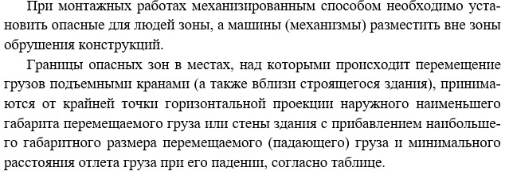
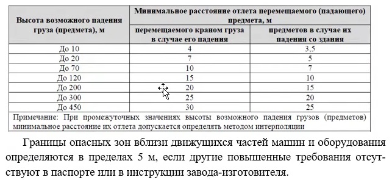
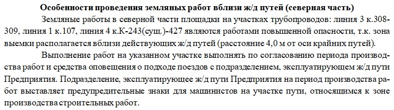

Описание особенностей проведения работ

Если объект расположен в стесненных условиях плотной городской застройки, необходимо подробно описать ограничения и меры по их преодолению. Если таких условий нет, раздел оформляется краткой записью об отсутствии ограничений.
В описании следует указать:
- характер ограничений (например, малая площадь площадки, близость зданий или коммуникаций);
- меры по обеспечению безопасности и организации пространства;
- выбор соответствующей техники и способов ведения работ.
Особое внимание уделяется:
- расчету параметров работы подъемных механизмов (например, длины вылета стрелы крана);
- обеспечению безопасных расстояний;
- устройству ограждений и защитных зон;
- контролю безопасности работников.

Также стоит добавить таблицу расчетного расстояния падения грузов.

Дополнительно рекомендуется включить:
- анализ рисков попадания объектов инфраструктуры в опасную зону;
- мероприятия по временному ограничению движения транспорта и изменению маршрутов общественного транспорта;
- меры по временному закрытию улиц;
- ссылки на нормативные требования, регулирующие минимальные расстояния, виды ограждений и порядок согласования мер безопасности.
Эта информация необходима как подрядчику, так и заказчику для корректного согласования проекта и обеспечения безопасного выполнения работ.
Работа на действующем предприятии
При проведении работ на действующем предприятии необходимо отразить:
- перечень реконструкционных и технических мероприятий (реконструкция, расширение, модернизация цехов и сооружений);
- режим производственного процесса: полностью остановлен, частично остановлен или продолжается без перерыва;
- оценку влияния стеснённых условий на выбор технологий и методов работ;
- обоснование выбора машин и механизмов, применяемых для выполнения задач;
- условия безопасной эксплуатации оборудования.
Если работы выполняются вблизи линий электропередачи, необходимо дополнительно указать:
- описание и характеристики ЛЭП;
- определение охранных и опасных зон.

Все мероприятия по организации и безопасности должны быть отражены в проекте производства работ (ППР), разработанном с учетом условий конкретного предприятия.
В случае проведения работ на опасных или химических производствах в обязательном порядке применяются требования охраны труда и промышленной безопасности, разрабатываемые ответственным лицом по ОТ и ПБ.